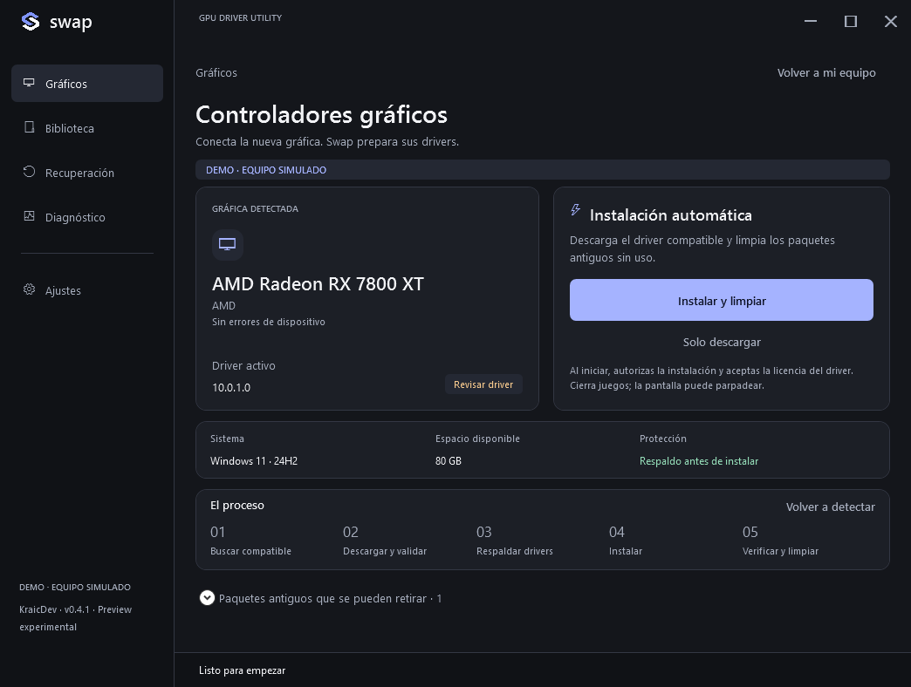

Automatic preparation
Hardware-matched Windows Update drivers. Back up first, verify the active signed driver, then clean only unused packages from absent GPU brands.
WINDOWS UTILITIES / KRAICDEV
Download, back up, install and verify. A single portable EXE for NVIDIA, AMD and Intel Arc.
NVIDIA ↔ AMD ↔ INTEL ARC
THE APPLICATION

Actual application capture · Demo hardware · Dark theme
BUILT FOR THE DRIVER CHANGE
Hardware-matched Windows Update drivers. Back up first, verify the active signed driver, then clean only unused packages from absent GPU brands.
Create an independent graphics backup without changing drivers. Check file integrity before restoring a compatible package.
NEW IN 0.4Driver health, hardware Direct3D, display resolution and Hz, recent incidents and a saved comparison of the graphics state.
BEFORE YOU START
No account, subscription, ads or project telemetry. Six interface languages follow your PC.
Release notes and checksum ↗Applicable Display drivers from your configured Windows Update service. It may offer an older driver than the manufacturer. Full vendor suites, PhysX and optional applications are not installed automatically.
Not to open Swap or run diagnostics. Windows may require a reboot after changing drivers. Swap saves a continuation session and preserves pending packages. Remote sessions and pending servicing restarts block driver changes.
The preview targets Windows 10/11 x64, PowerShell 5.1, Windows Update and at least 4 GB free plus driver space. Internet is needed for automatic downloads. Physical hardware compatibility still needs testing.
Yes, under GPL-3.0-or-later, including commercial reuse. Distributed modifications must retain required notices and corresponding source. Forks must not impersonate KraicDev or claim to be official releases.
FREE / OPEN SOURCE
Review the code, report reproducible issues and contribute hardware test results.
Contribute on GitHub ↗